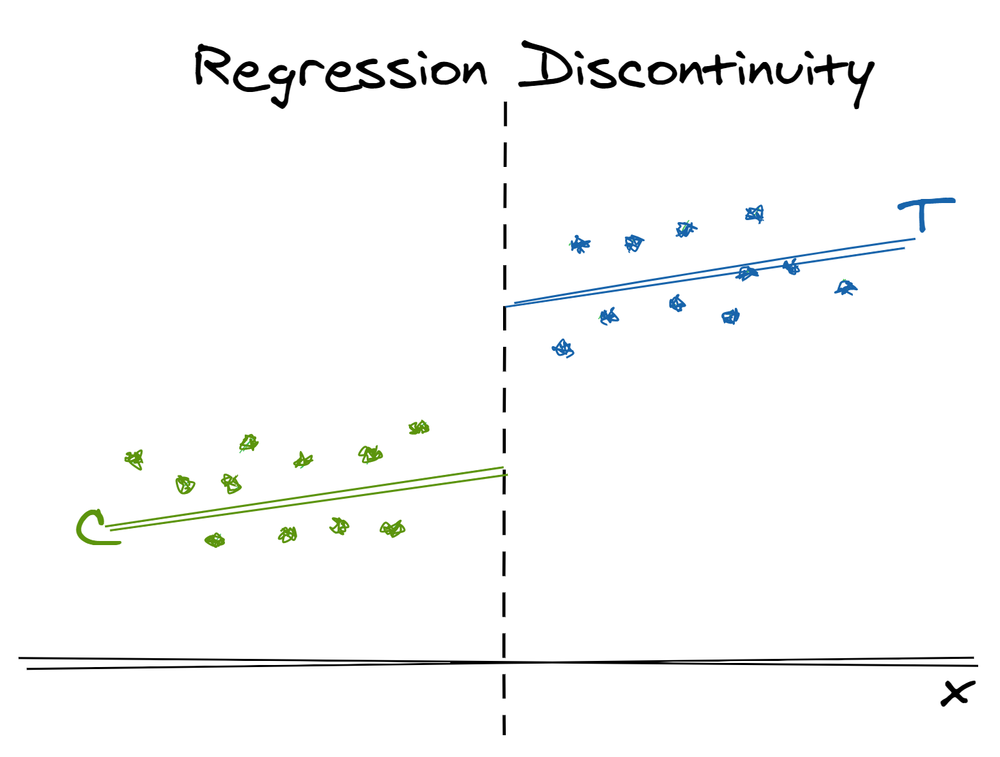
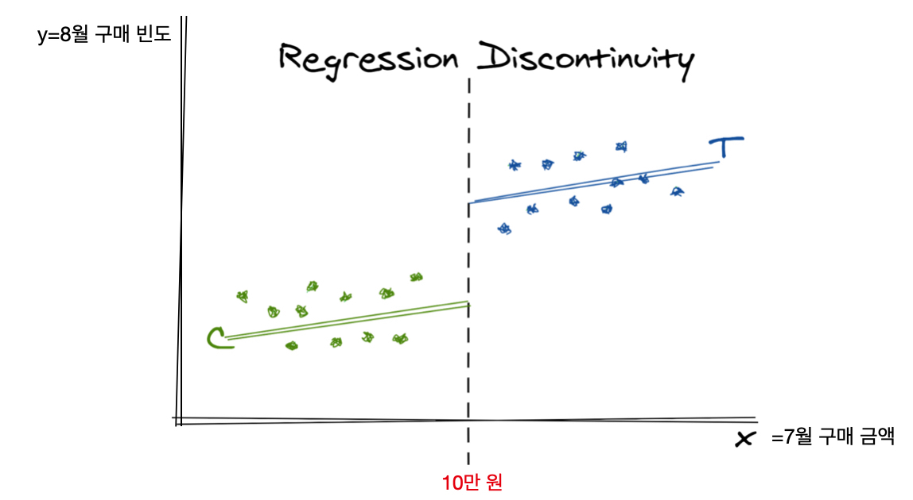
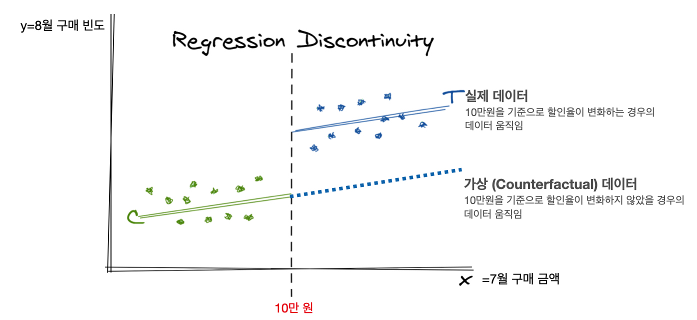
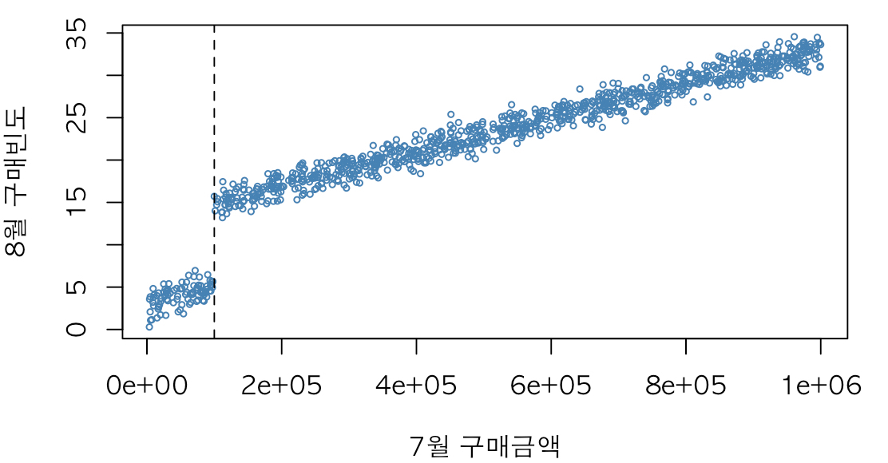
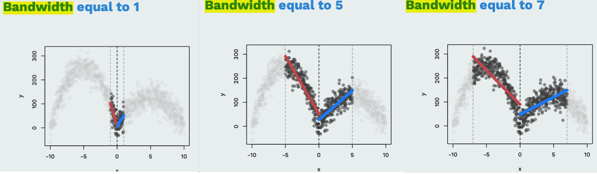
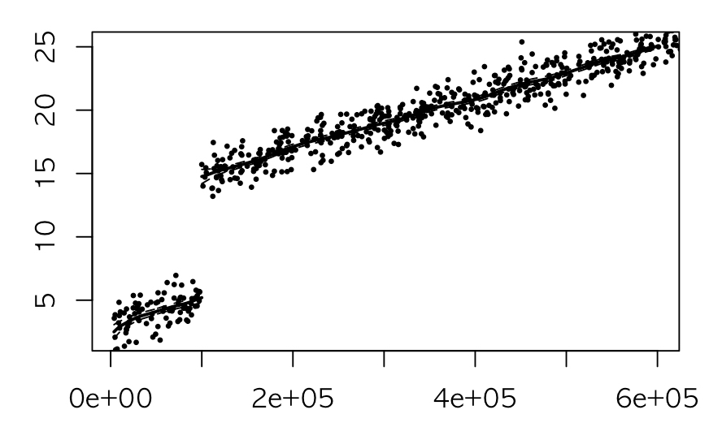
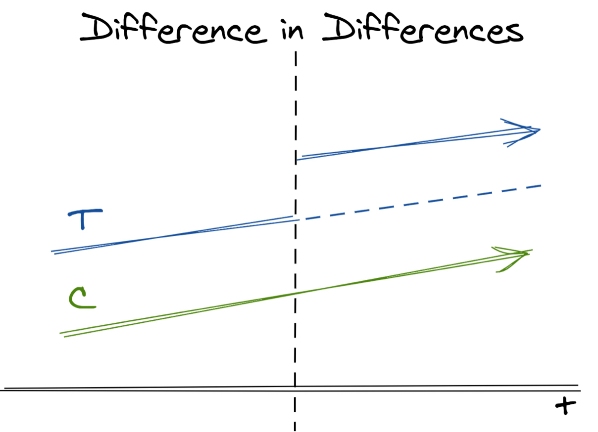
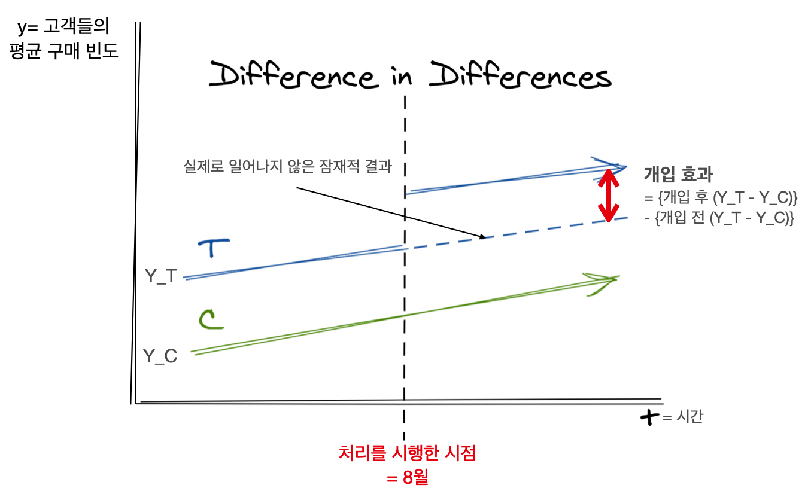
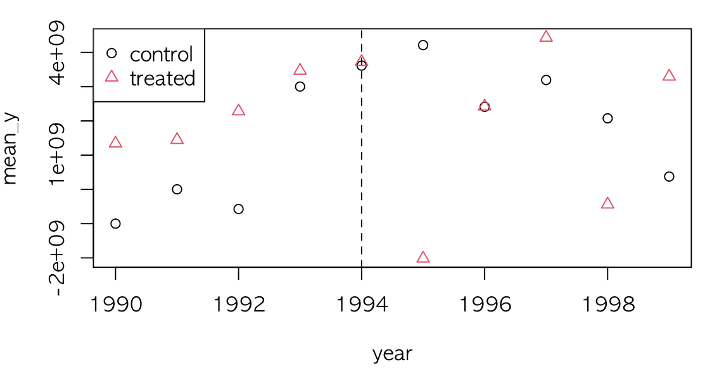

인과 관계 분석 시리즈 (5): 회귀 불연속 설계법 (Regression Discontinuity Design)과 이중 차분법 (DiD)
tylervigen.com에 따르면 치즈 소비량은 침대 시트에 얽혀서 죽는 사망자수와 95% 가량 상관 관계가 있다 합니다. 그럼 치즈 소비가 침대 시트로 얽혀 죽는 사망자수와 인과 관계가 있다 말할 수 있을까요?
- 이번 포스팅은 "다시 한 번 쓰는 인과 관계 추론 방법론"의 컨셉으로 기존에 썼던 인과 관계 분석 시리즈 (1): 성향 점수 매칭 (Propensity Score Matching)과 층화 (Stratification)에서 좀 더 이해하기 쉽게, 더 다양한 방법론을 소개하고자 합니다.
- 자세하게는 회귀 불연속 설계법 (Regression Discontinuity Design)과 이중 차분법 (Difference in Differences)를 살펴보고, 이들을 언제 쓸 수 있는지 방법론 간의 차이에 주목하여 정리하고자 합니다.
- 주 내용은 데이터 분석의 힘 책과
[link]를 참조하였습니다.
상관은 인과를 함축하지 않는다
데이터 분석가라면 한 번쯤 고민해 볼 인과 관계 (Causal relationship)와 상관 관계 (Correlation)의 차이에 대해 아시나요?
상관 관계는 "A의 발생이 B와 상관하고 있을 때"를, 인과 관계는 "A가 B의 원인일 때"를 의미합니다. 예를 들어 봅시다. PT를 받고 있는 헬린이 1,000명을 대상으로 조사했을 때, PT를 받은 횟수가 많을수록 살이 찌는 경향이 보임을 관측했습니다. 따라서 이들의 상관 계수를 구하니 0.8이라는 값을 구했다고 합시다. 그러면 PT를 받은 횟수와 3개월 후 몸무게는 양의 상관 관계가 있다고 말할 수가 있습니다. 참고로 상관 계수는 두 변수 간의 공분산을 각각의 표준편차로 나눈 값을 의미합니다.
그렇다면, 이 상관 계수를 통해 "PT가 살찌는 원인이다"라 단언할 수 있을까요? 직관적으로 아니라는 것을 아실겁니다.
먼저, 우리가 추정하고 싶은 인과 관계가 "PT 횟수에 따른 몸무게 변화"라 합시다. 이 때 PT 횟수는 전문 용어로 **처리 (Treatment)**라 하고, PT 횟수로 인해 순수하게 바뀌는 몸무게 변화를 **처리 효과 (Treatment Effect)**라 합니다. 그리고 원인이 되는 "PT 횟수"를 X, 결과를 "몸무게"를 Y라 칭합니다.
데이터 분석의 힘 책에 따르면, 이렇게 상관 관계가 인과 관계로 이어지지 않는 이유는 크게 두 가지입니다.
첫째, 다른 요인이 영향을 미쳤을 가능성이 있습니다.
Y가 변화한 이유에 X 이외의 다른 요인이 영향을 미쳤을 수 있습니다. 세상은 실험실처럼 여러 요인을 통제하기 어렵습니다. X가 벌어진 것과 같은 시기에 여러 가지 일이 일어날 수 있습니다. 예를 들어 PT를 하면서 근육량이 늘어나 몸무게가 증가할 수는 있지만, 최근 들어 재택 근무를 많이 하면서 활동량이 줄어 몸무게가 증가할 수도 있습니다. 즉, 재택을 많이 할수록 PT할 기회도 많아지고, 몸무게 증가에도 기여를 할 것입니다. 이렇게 "재택 근무 횟수"는 "PT 횟수"와 "몸무게"에 모두 영향을 주는 변수입니다 (이렇게 X와 Y에 모두 영향을 주는 변수를 V라 칭하겠습니다).
두 번째, 인과 관계가 반대일 가능성이 있습니다.
때로는 Y가 X에 영향을 주는 역 인과 관계의 가능성도 부정할 수 없습니다. 예를 들어 PT 사례에서 몸무게가 증가해서 PT를 더 많이 하는 경우, X Y가 아닌 Y X의 인과 관계가 성립하는 것입니다.
결과적으로 X와 Y에 상관 관계가 있을 경우 세 가지 가능성이 존재합니다.
- X가 Y에 영향을 주었을 가능성
- V가 X와 Y 양쪽에 영향을 주었을 가능성
- Y가 X에 영향을 주었을 가능성
1번의 경우 X와 Y간의 상관 관계와 인과 관계가 모두 성립하지만, 2번이나 3번에서는 X와 Y간의 상관 관계만 보장이 됩니다.
인과 관계 분석을 위한 방법론
자, 상관 관계와 인과 관계가 다르다는 건 이해했습니다. 그럼 인과 관계를 파악하기 위해선 어떻게 분석해야 할까요?
가장 확실한 방법은 RCT (Randomized Clinical Trial)무작위 임상 실험입니다. RCT란 가능한 변수들을 최대한 고정하고 (통제하고) 처리만 변화시켜가면서 효과가 어떻게 바뀌는 지 실험하는 환경을 의미합니다 (의학 분야 외에서도 통제된 환경에 범용적으로 쓰이는 용어입니다!). 현대에서 이러한 유사 실험의 예는 A/B test입니다. RCT의 핵심은 관찰 그룹별로 나눌 떄 반드시 무작위로 나눠야한다는 점입니다. 예를 들어 A그룹에는 PT를 하지 않게 하고, B그룹에만 PT를 하게 해 실험할 경우, 동전을 던져 앞면이 나오면 A 그룹, 뒷면이 나오면 B 그룹으로 배정하는 “무작위” 방식이 필요합니다.
왜 무작위로 나누는 것이 중요할까요? 무작위로 집단을 나눌 경우 어느 정도 표본수가 확보되었을 때 두 집단은 통계적으로 동질한 집단이 되기 때문입니다. 이를테면 두 집단은 체중 변화에 영향을 줄 수 있는 성별 분포, 나이대, 본래의 체중과 같은 요인들의 분포가 비슷해집니다.
그러나 현실에서는 RCT를 실행할 수 없는 경우가 많습니다. 일단 RCT를 시행하려면 실험을 설계하고 끝날 때까지 비용, 시간, 노력이 많이 들고, 윤리적인 문제로 실험이 불가한 경우도 많습니다. 예를 들어 어떤 게임 회사에서 어떤 이벤트의 효과를 검증하는 분석이 필요하여 RCT를 시행한다 할 때, 어떤 유저에게는 이 이벤트를 보여주고, 어떤 유저에게는 보여주지 않는다면 게임 회사에 트럭이 몰려오겠죠 ㄷㄷ…
이렇게 RCT를 시행할 수 없는 환경을 관측 환경 (Observational Studies) 이라 합니다. 관측 환경 상에서 인과 관계를 추정하는 방법론은 성향 점수 매칭, 층화, RD 디자인, 이중차분법으로 크게 네 가지입니다.
- 저번 포스팅에서 살펴 봤던 성향 점수 매칭 (Propensity Score Matching)과 층화 (Stratification) 방법은 처리를 받은 집단과 받지 못한 집단 간의 특성이 비슷한데 처리를 무작위로 시행받지 못한 경우, 사용할 수 있는 방법입니다. 이 방법은 처리 집단 (Treatment Group)과 비처리 집단 (Control Group)의 밸런스를 맞춰주어 집단들의 특성들의 분포를 비슷하게 만들어주어서 그들의 평균 결과들을 비교 가능하도록 합니다.
- 처리 그룹과 비처리 그룹이 특정한 경계선 (cutoff)에 의해 나눠지는 경우, RD 디자인 (Regression Discontinuity Design)이 적합합니다. 경계선 부근에서 점프가 발생했다면 이걸 처리 효과라고 봅니다 (더 자세히 살펴보겠습니다).
- 마지막으로, 다른 특성을 가진 모집단들에 처리가 배정(assign)됐다면, 이중차분법 (DiD; Difference-in-differences) 방법이 여러 시점에 걸쳐 그룹들 간의 비교를 가능케 합니다.
RD 디자인 (Regression Discontinuity Design)
RD 디자인의 핵심은 **불연속 (discontinuity)**과 **경계선 (cutoff)**입니다. 여러 산업에서는 특정 경계선을 기준으로 전략을 세우는 경우가 많습니다. 예를 들어, 고객들의 월 구매 금액에 따라 회원 등급을 나누어 등급에 따라 혜택을 차등 적용하는 경우에 이런 RD 디자인을 적용할 수 있습니다. 이 경우에 불연속한 지점에서 국소적인 처리 효과를 찾아낼 수 있습니다.

위의 그림에서 x축은 경계선을 만드는 기준입니다. 이를 RD 디자인에서는 "running variable"이라 합니다. 만약 어떤 회사에서 고객들의 7월의 구매 금액 10만 원을 기준으로 제품 할인율을 차등 적용했을 때, 8월 (다음 달)의 구매 빈도에 미치는 영향을 분석한다 가정해봅시다. 이때 x축은 "고객들의 7월 구매 금액"에 해당합니다. 이를 위해 7월의 구매 금액이 10만원 이상인 고객에게는 8월 동안 전 상품 30% 할인율을 책정하였고, 10만 원 미만인 고객에게는 전 상품 10% 할인율을 책정했습니다. 이 때, "C"에 해당하는 초록색 점들은 대조 그룹 (Control group)으로, 10만 원 미만 구매한 고객을 의미하고, "T"에 해당하는 파란색 점은 처리 그룹 (Treatment group)으로 10만 원 이상 구매한 고객을 의미합니다.
회사 입장에서는 할인율을 30%로 책정한 고객 ( = 7월에 10만 원 이상 구매한 고객)들의 8월의 구매 빈도가 더 많아질 것이라 예상할 것입니다. 그럼 y축을 "8월의 구매 빈도"로 놓는 것입니다.

결국 이렇게 산점도를 그렸을 때, 두 가지 사실을 알 수 있습니다.
- 첫 번째는 7월의 구매 금액이 많을수록 8월의 구매 빈도가 높아지고 있다는 점입니다.
- 두 번째는 10만 원을 경계로 큰 **점프 (비연속적 변화, 불연속점)**가 보인다는 점입니다. 즉, 7월 동안 9만 9천원을 구매한 고객에 비해 10만 원을 구매한 고객의 8월 구매 빈도가 급상승함을 확인할 수 있습니다. 갑자기 10만 원을 구매한 고객의 8월 구매 빈도가 급증한 현상을 내부적 요인에서 찾을 수는 없습니다. 따라서 이렇게 된 요인에는 "할인율"을 차등 적용한 것이 가장 주요한 요인이겠죠. 결과적으로, 7월 구매 금액의 경계선인 "10만 원"을 기준으로 불연속한 모습을 보인다면 인과 효과를 추정할 수 있습니다.
RD 디자인의 가정
이렇게 인과 관계를 추정하려면 RD 디자인 가정을 만족해야 합니다.
RD 디자인 가정: 만약 경계선 (10만 원)에서 할인율이 변화하지 않는다면, 8월의 구매 빈도 (y)도 점프하지 않는다.

위 그림에서 보면, 점선으로 된 **가상 데이터 (Counterfactual)**가 경계선에서 할인율이 변화하지 않았을 때의 가상의 결과입니다. 만약 회사에서 할인율을 차등 적용하지 않고 모든 고객들에게 10% 할인율을 적용했을 때 가상 데이터처럼 8월의 구매 빈도가 10만 원을 기준으로 점프하지 않는다 가정했을 때, 이 RD 디자인을 적용할 수 있습니다.
그러면 이 가정이 성립하는지를 어떻게 검증할까요? 안타깝게도 불가능합니다. 이 사례에서는 인위적인 개입이 불가능하므로 할인율이 10%일 경우의 가상 데이터가 실제로는 존재하지 않습니다. 즉 RD 디자인의 가정은 점선으로 표시된 가상의 데이터에 기초하므로 데이터로 입증하는 것은 불가능합니다. 분석가는 다만 "아마 이 가정이 성립할 것"이라는 주장만 펼칠 수 있을 뿐입니다. 제가 이런 상황에 처했다면 과거의 데이터와 비교할 것 같습니다. 할인율을 10% 동일하게 적용했던 전년 동월의 데이터를 봤을 때 점프가 보이지 않는다면, 이 점프는 할인율로 인한 효과라 파악할 수 있는 것이죠.
RD 디자인 구현하기
이제 이 RD 디자인을 회귀 모형으로 설명해봅시다.
이 경우 의 값이 인과 효과라 볼 수 있습니다. R에서 이를 구현하려면 rdd 패키지를 이용할 수 있습니다.
먼저 이를 위한 시뮬레이션 데이터를 생성합니다.
x는 7월의 구매 금액으로 0부터 100만 원까지 균등 분포를 따르는 난수를 1,000개 생성했습니다.y는 8월의 구매 빈도로, = 0.0002, = 10으로 설정하였습니다.
1 | library(rdd) |
이를 그래프로 그리면 다음과 같습니다.

10만 원을 기준으로 그 미만의 8월 구매 빈도는 5번 정도 되는 반면, 그 이후의 구매 빈도는 15번 정도로, 그래프만 봐도 7월에 9만 9천 원 구매한 고객과 10만 원 구매한 고객의 8월의 구매 빈도가 10번 정도 차이가 있음을 확인할 수 있습니다. 이 10번은 국소적인 인과 효과 (local treatment effect)라 볼 수 있습니다. 국소적인 이유는 10만 원을 기준으로 안타깝게 그 기준을 만족하지 못한 고객 (ex. 9만 9천 원)과 딱 그 기준에 만족한 고객 (= 10만 원) 간의 8월 구매 빈도를 국소적으로 비교하고 있기 때문입니다.
이를 rdd 패키지의 RDestimate함수를 이용해 추정하면 다음과 같습니다.
-
여기서
cutpoint는 처리 그룹과 비처리 그룹을 나누는 경계선입니다. 이 경계선이 알려져 있는 경우 RD 디자인을 이용하기 때문에, cutpoint를 명시해야 합니다. 저희의 경계선은 10만 원을 경계로 할인율이 다르게 책정됐기 때문에 10만 원입니다. -
bw는 bandwidth로, 국소적인 영역의 넓이입니다.
위 사진을 보면 bandwidth가 좁아질수록 탐색하는 데이터의 범위가 좁습니다. 저는 편의상 ±5만 원으로 두었습니다.
1 | rd = RDestimate(y~x,cutpoint=100000, bw=50000) |
이때 rd의 summary 결과를 보면 LATE (Local Average Treatment Effect, 국소 평균 처리 효과)가 바로 RD 디자인으로 추정된 인과 효과입니다. Estimate을 보면 9.562로 추정되었습니다. 또한 Half-BW와 Double-BW는 각각 bandwidth을 절반으로 줄였을 때, 두 배로 늘렸을 때를 의미하고 Observations은 그 bandwidth 안에 들어온 관측치 수를 의미합니다.
1 | > summary(rd) |

RDEstimate 함수를 이용해 만든 객체 rd를 그리면 위 그림과 같이 나타납니다. 추정된 회귀 선을 그려주죠.
이중차분법 (Difference in Differences)
이중차분법은 같은 시간대의 같은 모집단 내의 처리와 비교 그룹을 비교하는 대신에, 처리와 비교 그룹의 시간에 따른 상대적 차이를 비교합니다.
자, 이제 그럼 RD 디자인은 격파! 했으니 이중 차분법을 알아봅시다. 성향 점수 기반 매칭이나 층화, RD 디자인 방법 모두 비교 대상을 처리 대상과 최대한 비슷하게 만들어서 한 시점에 한해 비교하는 방법들입니다. 예를 들어, 위 예시에서는 8월이라는 한 시점만 고려해서 구매 빈도를 비교했죠. 이에 비해 이중차분법은 한 시점에서의 유사성을 보는 것이 아니라 시간에 따라 어떻게 유사성이 변하는지를 보여줍니다. 즉, 같은 시간대의 같은 모집단 내의 처리와 비교 그룹을 비교하는 대신에, 이중차분법은 처리와 비교 그룹의 시간에 따른 상대적 차이를 비교합니다. 여러 집단에 대해 여러 기간에 걸쳐 수집한 데이터를 분석한다는 점에서 이중차분법은 "패널 데이터 분석"이라고도 불립니다. (데이터 분석의 힘 책에서는 이중차분법을 패널 데이터 분석법이라 칭하고 있습니다)

위 그림에서 x축은 시간에 해당합니다. 그리고 마찬가지로 C는 비교 그룹 (Control Group), T는 처리 그룹(Treatment Group)을 의미합니다. 시간에 따른 비교 그룹의 결과 평균값을 , 처리 그룹의 결과 평균값을 라 할 때 개입 효과 (인과 효과)는 다음과 같이 (처리 후의 그룹 간 평균 차이 - 처리 전의 처리 그룹 간 차이)로 추정됩니다.

앞의 예에서 y축이 평균 구매 빈도로 바뀌고, x축이 시간으로 바뀌었습니다. 처리는 7월의 구매 금액에 따라 10만 원 이상이면 8월에 전 상품 할인율을 30%, 미만이면 10%로 둔 것이기 때문에, 처리가 시작한 시점은 8월이 되겠죠. 처리 그룹 (T)은 7월에 10만 원 이상 구매한 고객, 비교 그룹 ©는 7월에 10만 원 미만 구매한 고객으로 이들의 평균 구매 빈도를 처리 이전과 이후에 트래킹하여 그래프를 그린 것입니다.
이중차분법의 가정
이중차분법에는 **평형 트렌드 가정 (parallel trend assumption)**이 필요합니다.
이중차분법 가정: 만약 처리가 일어나지 않았다면 처리 집단의 평균값 ()과 비교 집단의 평균값 ()는 평행한 추이를 보인다.
평행 트렌드란 시간 변화에 따른 두 집단의 데이터 움직임이 평행을 이룬다는 의미입니다. 그래야만 "처리"의 영향력이 입증되기 때문입니다. 저희가 그린 그래프는 완벽하게 평행 트렌드 가정이 성립하는 경우입니다. 점선은 처리가 일어나지 않았을 경우 (할인율을 30%로 올리지 않았을 경우) 의 움직임입니다. 그러나 RD 디자인과 마찬가지로 점선 부분은 처리가 일어나지 않았을 때의 가상의 상황이기 때문에 실제 데이터로 관측하는 것은 불가능합니다. 결과적으로 평행 트렌드 가정을 데이터로 입증할 수가 없으므로, 분석자는 가정이 성립할 것이라는 증거를 최대한 열거하는 수밖에 없습니다.
이를 위해 데이터 분석가가 제공할 수 있는 정보는 두 가지입니다.
- 첫째, 최소한 처리 이전의 시점에서 처리 집단과 비교 집단 사이에 평행 트렌드 가정이 성립하는지 조사해야 합니다. 물론 개입 전에 평행 트렌드 가정이 성립했더라도 개입 후에 어떤 일이 일어나 가정이 무너질 가능성이 있습니다. 그럼에도 개입 이전에 평행 트렌드 가정이 성립했다면 "이후에도 성립할 것"이라는 추정이 가능하기 때문에 조사합니다.
- 둘째, 개입 이후에 개입 집단에만 영향을 미친 다른 사건이나 변수가 없는지 확인해야 합니다. 예를 들어 월 10만 원 이상 고객에게 할인율을 30%로 제공했을 뿐만 아니라 PUSH 메시지를 통해 구매를 유도했다면 이 변수로 인해 인과 관계 추정을 어렵게 합니다.
이중차분법 구현하기
이제 이를 식으로 나타내봅시다.
먼저 평균 반응 값을 다음과 같이 정의합니다.
- : 처리 이후의 처리 그룹의 평균 반응 값
- : 처리 이후의 비교 그룹의 평균 반응 값
- : 처리 이전의 처리 그룹의 평균 반응 값
- : 처리 이전의 비교 그룹의 평균 반응 값
이때 DiD 추정값 는 이렇게 정의됩니다:
번째 고객에 대해서 번째 시점에서의 구매 빈도를 , 를 처리 그룹, 를 처리 시점 이후인지 아닌지를 나타내는 indicator 변수라 할 때, DiD 모델을 회귀식으로 나타내면 다음과 같습니다.
여기서 에 해당하는 상호작용 term이 바로 DiD 값이 됩니다.
이를 R로 구현해봅시다. 사용한 데이터는 [link]이 곳을 참조하였습니다.
이 데이터는 시뮬레이션 데이터로 시간 변수인 year에 따라 1994년에 E, F, G 국가에 처리가 진행되었습니다. 이 때 A에 해당하는 기점은 1994년 이후인지 아닌지의 여부이고, T는 처리 그룹에 해당하는 변수입니다.
1 | library(foreign) |
결과를 보면 에 해당한 값은 -2.520e+09 = 약 -25억으로, 어떠한 처리로 인해서 값이 25억 정도 감소했음을 확인할 수 있습니다.
1 | > summary(didreg) |
연도와 처리 그룹 여부에 따라서 평균 y값을 산출하고 이에 따라서 데이터를 그렸을 때, 1994년을 기점으로 평균 y값이 감소하는 모습을 보입니다.
1 | library(dplyr) |

이를 확장해서 그룹별로 DiD 추정값을 구하려면 did R Package를 참조하시면 좋을 것 같습니다.